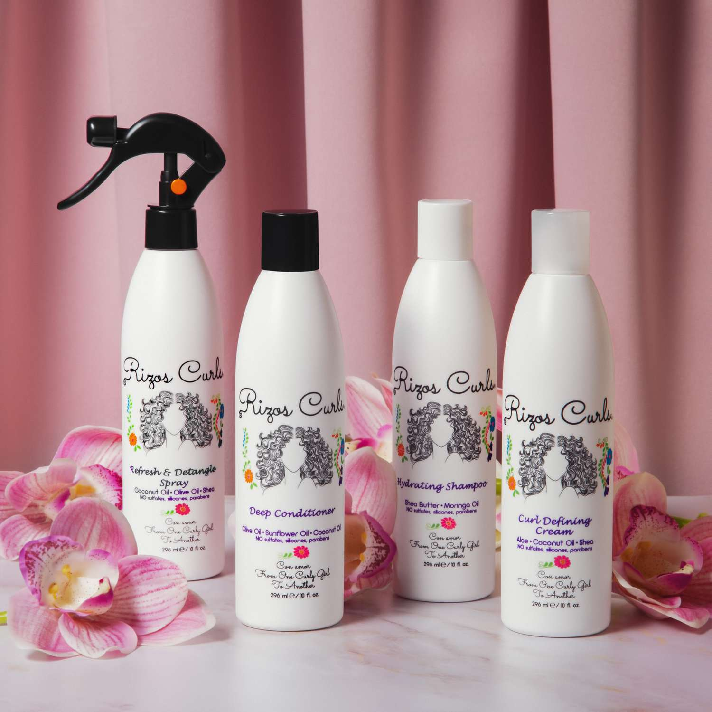

¿Por qué es especial el cabello rizado?
El cabello rizado tiene características únicas que requieren cuidados especiales...

Productos Esenciales para el Cabello Rizado
- Champús Hidratantes
- Acondicionadores Intensivos
- Mascarillas Capilares
- Geles y Crema para Rizos
- Aceites Capilares 
Consejos para el Cuidado del Cabello Rizado
No laves el cabello todos los días...
Testimonios
“Desde que empecé a usar productos específicos para mi cabello rizado, he notado una gran diferencia.” - Ana M.